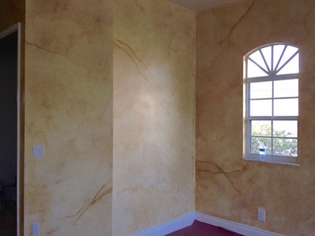
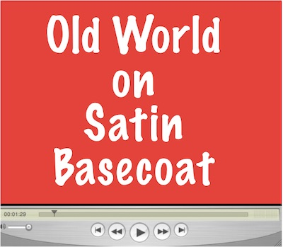
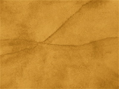
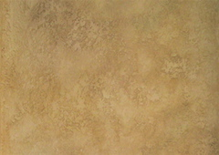
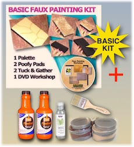

The Old World Parchment is the most requested faux finish.

It's common to see pictures of walls faux painted with this technique in decorator magazines. Another common term for this finish is Tuscany.
The goal of this technique is to make the walls look old and worn. There are a few different ways to achieve this. The most common method is to use a cheese cloth to rub the glaze on the wall. Another way is to use a brush and apply a cross hatch pattern all over. Another method is to use paint rollers to apply the glazes to the wall and then remove some of the glaze in order to let some of the base coat to show thru. Then using a hake brush, you soften the patterns made.
But these methods are time consuming and require expensive brushes. With the Patented (#7472450) Triple S Faux System© as seen on T.V., you can achieve this finish, saving time and money.

This video above shows the technique for a satin base coat.
We recommend an off white color for the base coat. Any color will do, including plain white, too. So if your walls are already light, you don't have to paint a new base coat. For a darker finish, you can also use a light tan color. The actual color we have used many times, when we have to paint the base coat over, is called Summer White. With any order of our kits, we will email you the formula for the color to buy from Sherwin Williams or Lowes.

The most popular colors used with this faux finish are earth tones. Golds and browns are the most common. The colors we used on the DVD Workshop are available on our website. The main color is Florentine Brass. For the second color, you can use Turkish Coffee or our MFP1003 Black Brown which is a color we made just for our company. If you want a lighter touch, then you can opt to use just the Florentine Brass or just load one section of Turkish Coffee or Black Brown to the palette instead of two sections. With our Old World Faux Combo kit, you will get the two colors.
Your base coat should be a satin sheen because it lends itself to more open time.
Eggshell is another sheen that can be used, but the method for applying the glaze on the wall is different than when you are using a satin base coat. The reason is because the glaze tends to dry faster with eggshell. Take time to watch the videos below to see the difference.

You can faux paint an Old World faux finish over textured walls. If you are using just one color like the Florentine Brass, then you would apply the steps mentioned in the video showing how to apply an Old World faux finish to eggshell. If working on a satin base coat with just one color on top, you can press the palette onto the wall and wash over the texture with the poofy pad instead. Adding a faux finish to textured walls enhances the beauty of the texture.
Click below to link to one of our pages to view a video that shows one way how to add Color Washing
or Old World to knockdown textured walls when using more than one color.
Faux Painting on Knockdown
Texture Video
The methods mentioned above are time consuming. In addition, you can't really control where your light and dark shapes will be. If you want to use more than one color, you must wait till the first layer is dry before applying another or you have to apply each color with a brush in different spots then blend together. If your walls are high and scaffolding is not an option, you must carry multiple trays up a ladder to do this, which is dangerous. All of these problems are nonexistent with the Triple S Faux System©. With our patented system (7472450), you just load the Multi Color Faux Palette and carry it up with the Poofy Pad and that’s it. No need to buy expensive brushes to soften the colors, either. Adding veins or cracks are easily done with the edge of the Poofy Pad, too.

With the Basic Faux Painting Kit, you can learn how to faux paint the Old World finish as well as 9 others. You can choose to receive a DVD or watch online with our E-DVD. Make that choice in our store drop down menu for any of out kits. We will send you a link via email to view.

Buy it today for only $41.99, on sale for a limited time, and you will also receive, FREE of charge, a Faux Painting Color Suggestions and Idea E-book-book. It will help you when it comes to choosing your faux painting colors.
The Multi Color Faux Palette and Poofy Pad are included in the Basic Faux Painting Kit.
Dear Sandy,
Thank you for creating the Faux Finish System! Everyone who has come to see it has loved it. My
21-year-old nephew told me it was GORGEOUS.
Thanks for all your time,
Margaret⭐⭐⭐⭐⭐
You can't beat this!

Old World Faux Combo
Only *$99.99
*FREE PRIORITY SHIPPING and FREE Color E-Book.
INCLUDES BASIC KIT.
Enough paint for living room.